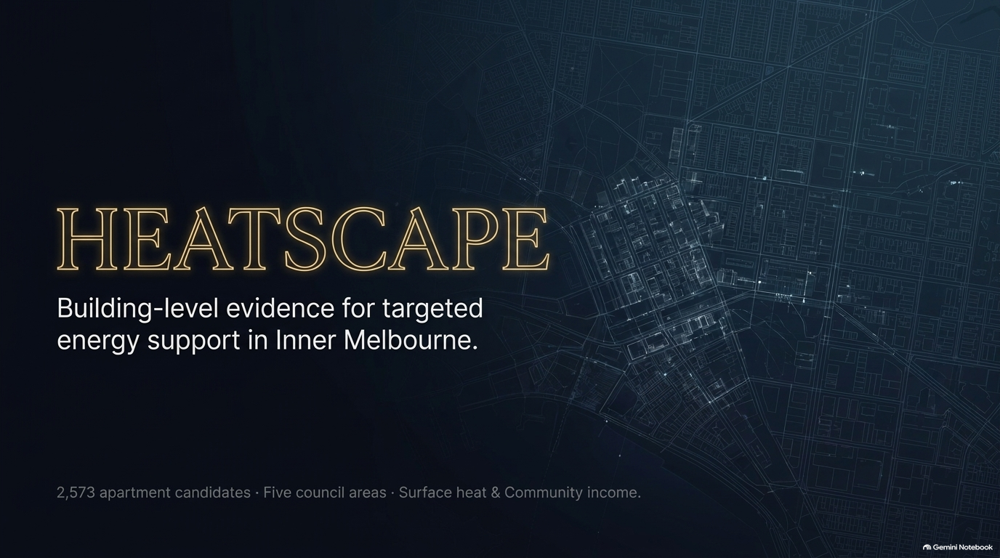
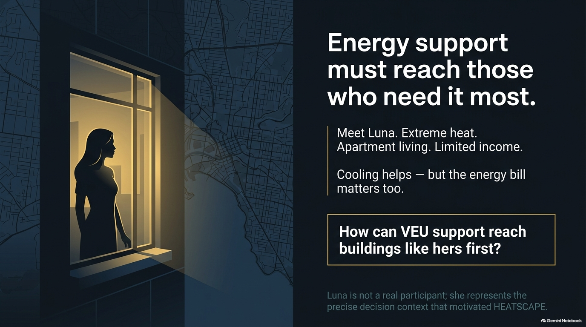
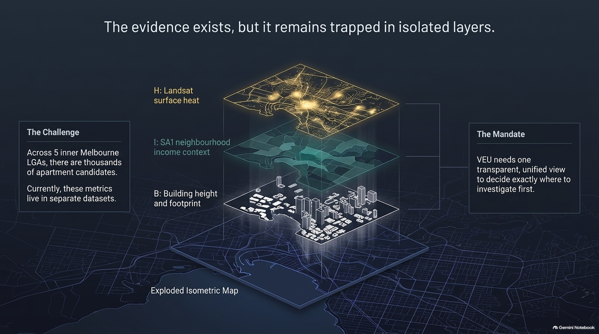
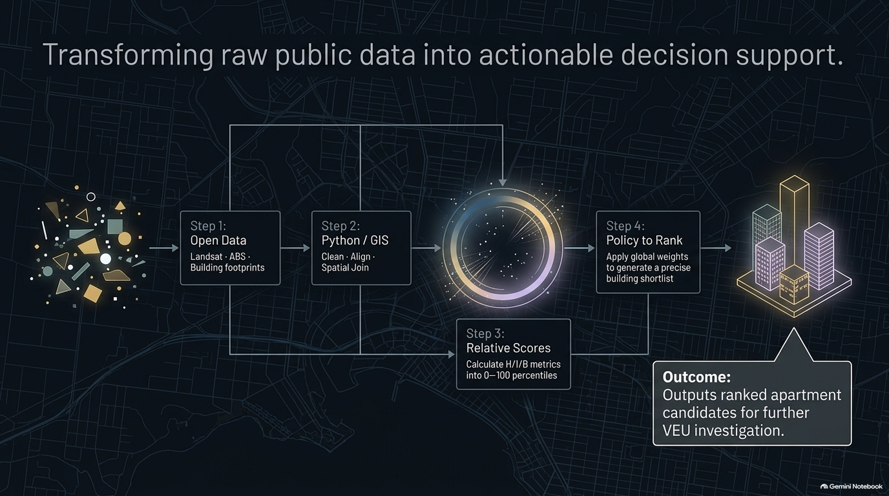
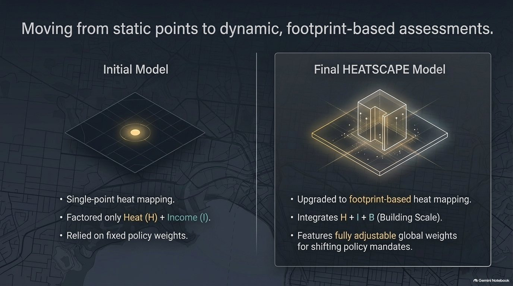
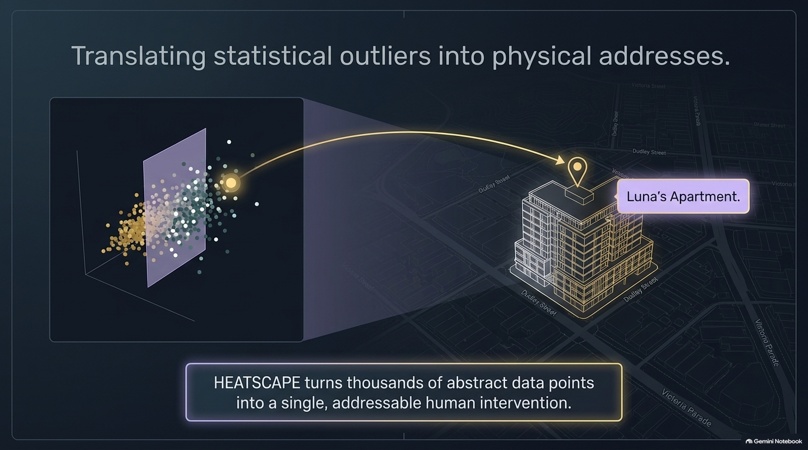
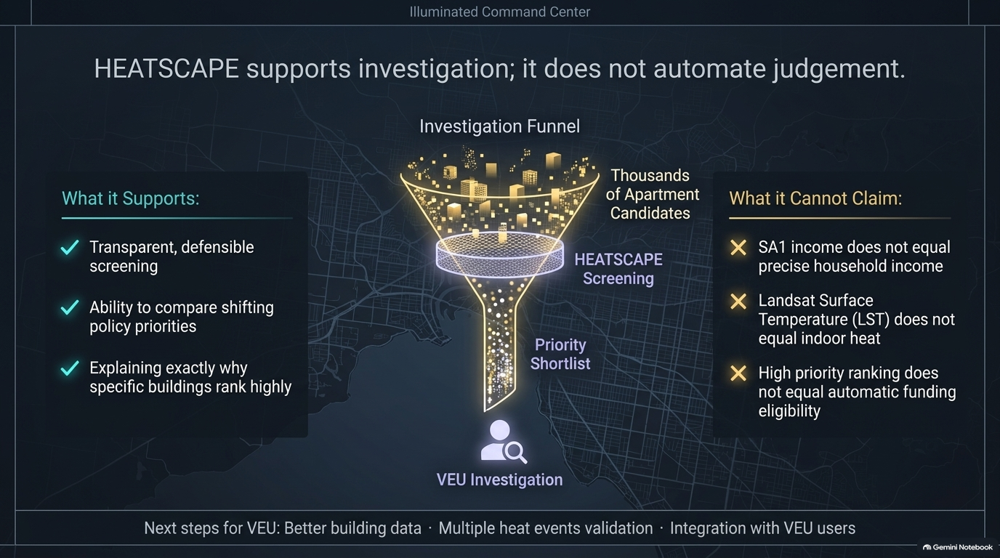

Questions & discussion welcome.
Loading presentation…
HEATSCAPE
Click the slide, press Space or → to reveal the next element. Once a slide is complete, the next step opens the following slide. Use Play to run the current slide’s sequence automatically.
In full screen, the toolbar stays completely hidden. Click or use Space / → to advance; press F or Esc to exit full screen. Each click reveals one element. Animation Off keeps the same sequence with instant reveals and stops ambient movement. Funnel particles illustrate screening, not measured throughput.
Enable JavaScript to use the presentation controls.